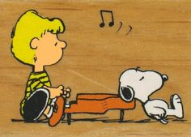

Cultural Blog - My Values

When I think about the times in my life when I've been happiest, several of the words on the list struck a chord. Among the loudest: adventure, challenge, confidence, friendships, growth, and romance (easy ladies, I'm married).
Of those, confidence is the most important. Without it, many of the other values wouldn't have followed for me. Sometimes, you know you're not the smartest, the bravest, or the most skilled. But what you may lack in one area, confidence picks up the slack. It's confidence that allows us to take risks, to take the first steps in overcoming our fears, and to bring us closer to others when we feel alone.
On a scale from 1 (sucks) to 5 (awesome), I would give myself a 4 in how I try to live up to the values above. It might sound cliche, but I strive to be the best person I can be. But I also know that there is always room for improvement.
As a teacher, I have many students this time of year excited by their college acceptance letters and uncertain in what the future may hold. A lot of students come up to me and ask about choosing a major in college. Though the answer I give to any one particular student is specific, the one common thread of advice I give them - "Live life with no regret." That usually gives them a pretty good idea.
Technical Blog #1 - Popular Javascript

Often called "the language of the web", Javascript is a dynamic computer language with many capabilities. It would be difficult to be a web developer without knowing at least the basics of Javascript. Here are some of the reasons that have made Javascript a popular choice for web development:
- Though it's a matter of preference, many people find that it is easier to learn than some other programming languages like C or Assembly (a machine language).
- Javascript has libraries filled with lots of properties and methods that can be used to interact with HTML and CSS (the "content" and "presentation" layers of a website").
- Many of these libraries account for how different browsers render JS code, making it easier for developers to write programs that will work on many browsers.
- Javascript can help websites be more interactive with users, adding a behavior component to the user experience.
- Javascript is flexible in that it can be used on both the client side (users and consumers) and the server side (the computers/programs that have all the data requested).
Three of my favorite sites are zenhabits.net, youtube.com, and ptxofficial.com. I like them for similar reasons: they provide me with a great user experience.
In particular, each website:
- Has interesting content. I wouldn't be visiting YouTube if I didn't like watching the posted videos or PTX's Official website if I weren't a fan of their music.
- Doesn't keep me waiting. I can't stand it when I click on a link at it take more than 2 seconds for the next screen to upload and be ready (I sound so spoiled!).
- Is easy to navigate. The menu choices are intuitive and easy to find. I'm not looking around the website, trying to figure out if I've found the right page. And 5 days later, I can return to the website and easily figure out where I read this article or saw that video.
- Is user-friendly. It doesn't ask me to login if I don't want to. I don't have to squint my eyes to read the content. The less important content is off to the side or at the bottom of the page.
- Is not cluttered with crap. Sometimes, I run into websites that have so many features on one page, I can't find the one thing that I'm looking for. To me, this seems typical of college and university websites. I just want to find my professor's home page, the academic calendar, or the phone number for the library. Rarely do I find the information so readily.
- Have no ads. I know, this isn't entirely fair because some websites are up and running thanks to their sponsors. But many ads are distracting and makes it hard for me to concentrate on the website's content. Instead, I keep looking in the direction of the ad (I think that's their goal - mission accomplished). OK, Youtube has ads. At least ads on YouTube appear on the bottom of the video and not in front of it!